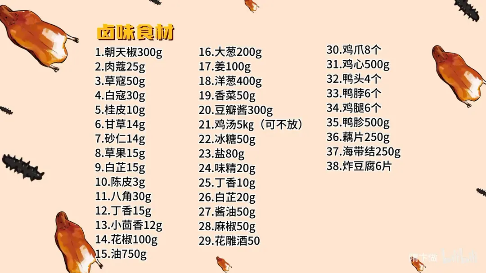
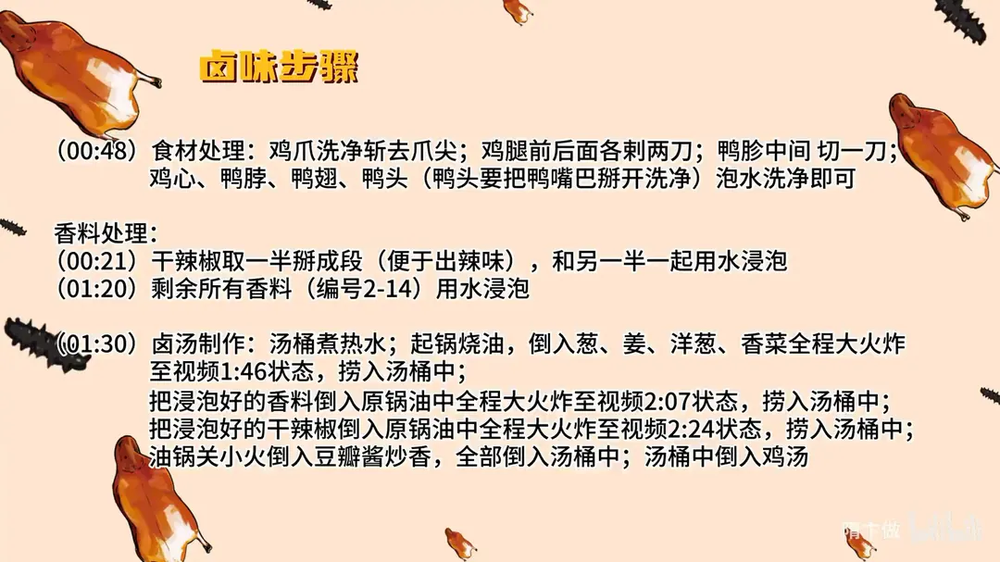
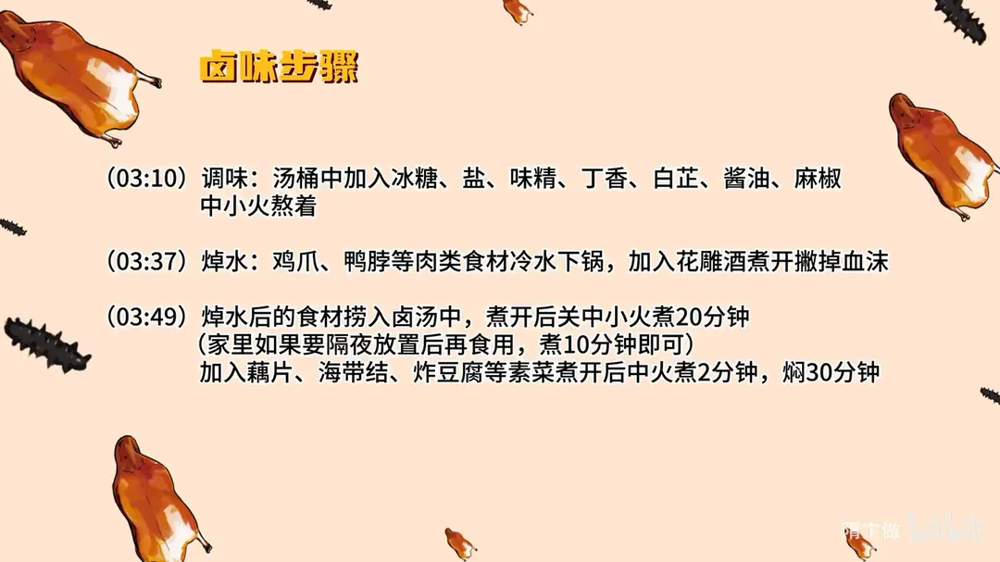

万能辣卤
隋卞一做。38 样配比一锅卤：朝天椒 300g 打底，肉蔻、草寇、白蔻等 14 味香料泡水后下 750g 油里炸香，再加 300g 豆瓣酱炒香入汤桶。肉类冷水下锅焯水去血沫，卤汤煮开转中小火 20 分钟，素菜只需 2 分钟加焖 30 分钟。
原视频：https://www.bilibili.com/video/BV1jC4y1e7TK
食材
朝天椒、鸡爪 等 38 样
| 类别 | 用料 | 用量 |
|---|---|---|
| 香料包 | 朝天椒 | 300g |
| 香料包 | 肉蔻 | 25g |
| 香料包 | 草寇 | 50g |
| 香料包 | 白蔻 | 30g |
| 香料包 | 桂皮 | 10g |
| 香料包 | 甘草 | 14g |
| 香料包 | 砂仁 | 14g |
| 香料包 | 草果 | 15g |
| 香料包 | 白芷 | 15g |
| 香料包 | 陈皮 | 3g |
| 香料包 | 八角 | 30g |
| 香料包 | 丁香 | 15g |
| 香料包 | 小茴香 | 12g |
| 香料包 | 花椒 | 100g |
| 其他 | 油 | 750g |
| 调味 | 大葱 | 200g |
| 调味 | 姜 | 100g |
| 调味 | 洋葱 | 400g |
| 调味 | 香菜 | 50g |
| 调味 | 豆瓣酱 | 300g |
| 调味 | 鸡汤 | 5kg（可不放） |
| 调味 | 冰糖 | 50g |
| 调味 | 盐 | 80g |
| 调味 | 味精 | 20g |
| 调味 | 丁香 | 10g |
| 调味 | 白芷 | 20g |
| 调味 | 酱油 | 50g |
| 调味 | 麻椒 | 50g |
| 调味 | 花雕酒 | 50 |
| 卤味食材 | 鸡爪 | 8 个 |
| 卤味食材 | 鸡心 | 500g |
| 卤味食材 | 鸭头 | 4 个 |
| 卤味食材 | 鸭脖 | 6 个 |
| 卤味食材 | 鸡腿 | 6 个 |
| 卤味食材 | 鸭胗 | 500g |
| 卤味食材 | 藕片 | 250g |
| 卤味食材 | 海带结 | 250g |
| 卤味食材 | 炸豆腐 | 6 片 |
步骤
- 食材处理：鸡爪洗净斩去爪尖；鸡腿前后各刺两刀；鸭胗中间切一刀；鸡心、鸭脖、鸭翅、鸭头泡水洗净即可，鸭头要把鸭嘴巴掰开洗净。
- 泡干辣椒：干辣椒取一半掰成段（便于出辣味），和另一半一起用水浸泡。
- 泡香料：剩余所有香料（除朝天椒、油以外）用水浸泡。
- 熬卤汤：汤桶煮热水；起锅烧油，倒入葱、姜、洋葱、香菜，全程大火炸至出香，捞入汤桶中。
- 炸香料：把浸泡好的香料倒入原锅油中，全程大火炸香，捞入汤桶中。
- 炸干辣椒：把浸泡好的干辣椒倒入原锅油中，全程大火炸香，捞入汤桶中。
- 炒豆瓣酱：油锅关小火，倒入豆瓣酱炒香，全部倒入汤桶中；汤桶中倒入鸡汤。
- 调味：汤桶中加入冰糖、盐、味精、丁香、白芷、酱油、麻椒，中小火熬着。
- 焯水：鸡爪、鸭脖等肉类食材冷水下锅，加入花雕酒煮开，撇掉血沫。
- 卤肉：焯水后的食材捞入卤汤中，煮开后关中小火煮 20 分钟；家里如果要隔夜放置后再食用，煮 10 分钟即可。
- 卤素菜：加入藕片、海带结、炸豆腐等素菜，煮开后中火煮 2 分钟，再焖 30 分钟。
小贴士
- 香料和干辣椒都要先泡水再下油炸，炸香后连料一起捞进汤桶。
- 卤汤用葱姜洋葱香菜炸出的油打底，香料、辣椒、豆瓣酱分次下锅，最后才加鸡汤。
讲解要点
难度：★★★☆☆（每步都不难，难在香料配比和分次炸料的火候）
为什么这么做
- 辣椒掰一半、留几个整的：掰开的辣椒辣味才炸得出来；留几只整的，卤完摆在盘里好看，辣度和卖相兼顾。
- 香料先泡水再下油锅：干香料一进热油就外焦内生、发苦，泡过水带着水汽下锅，香气出得来又不容易糊。
- 葱姜洋葱香菜先炸、香料其次、辣椒豆瓣酱最后：按耐炸程度从高到低排，一锅油分次用，香气层层往油里叠。
- 炸好的料连料带油一起倒进汤桶：香味不只在油里，料本身还带着香，卤的时候继续往汤里放味。
- 加鸡汤补味：自家做的量小，汤自然没有外面大锅厚，加鸡汤补足鲜味和浓度。
- 冰糖、丁香白芷、少放酱油：冰糖让辣味柔和不尖；丁香、白芷压腥增香；鸭头这类要带点色，酱油只能少放，多了遮香。
- 卤时只小滚、素菜煮 2 分钟再焖：火大翻滚会把鸭头鸡爪煮散、汤也浑；素菜久煮就烂，靠焖把味渗进去。
容易翻车
- 香料没泡水直接下油，外面糊了里面还是生的，整锅卤汤发苦。
- 葱姜香菜没炸到发黄就捞，香味没出来；炸黑了汤就是焦味。
- 卤的时候火太大，汤咕嘟大滚，鸭头鸡爪煮散、汤也浑。
- 素菜跟肉一起久煮，捞出来就烂。
- 辣椒掰得太碎、煮得太久，卤出来的东西只剩辣味。
热评补充
- 有网友按视频整理出完整配方（鸡汤 5kg、油 750g 另计）：干辣椒 300g、花椒 100g、麻椒 50g、草寇 50g、八角 30g、白蔻 30g、肉蔻 25g、草果 15g、白芷 15g、丁香 15g、甘草 14g、砂仁 14g、小茴香 12g、桂皮 10g、陈皮 3g；大葱 200g、姜 100g、洋葱 400g、香菜 50g、豆瓣酱 300g、冰糖 50g、盐 80g、味精 20g、酱油 50g、花雕酒 50g。
- 这锅汤想留成老汤，只能一直卤肉；煮过豆腐、蔬菜的汤会变味发酸，不常做饭的不建议养卤。
原片尾卡



原片文案
AI 字幕校准稿
万能辣卤来了，这个也属于年夜饭版本。过年的时候会剩一些鸡腿、鸡翅、鸡脚、海带等等，这是一个比较万能的方子，直接一锅全给它弄了。香料你们不用记，我会把详细的比例和配比放到片尾。
唯一需要注意的是辣椒。辣椒有很多种，辣度不一样，按自己的喜好来选。买回来之后要给它掰一下，要不然辣味出不来，掰一半就行；留几个整的，卤完以后放在盘里看着特别好看。
然后是食材处理。鸡爪直接做就行，挺干净的；鸡腿简单拉两刀，让它入味；鸭胗中间来一刀；鸭脖、鸡心、鸭翅、鸭头主要是泡，把脏东西泡出去就行，不用刀工处理。鸭子洗的时候要把鸭嘴掰开，看看里边干净不干净。蔬菜您就随意放，炸豆腐、海带都可以。
把香料全都倒在盆里，拿水泡上。锅洗干净，倒上油烧热，先把葱姜、洋葱加进去，还有香菜，全程大火，一定要把这个葱姜料炸得黄黄的，它才出香味。炸完之后，这个料直接放到提前准备好的汤里边。
还是这一锅油，把其他香料也放进去炸一下，看里边几乎没什么水分了就差不多了，捞到旁边的汤里边。再把这锅油里的泡好的辣椒炸一下，也捞进汤里。这时候酱香味稍微少了一些，把火关小，炸点豆瓣酱，炒香之后一起放到汤里，这样上面就有一层红油。
接下来就是秘方时间。你们经常会觉得自己在家做的没有外面卖的好吃，为什么呢？因为自己做的量没有外面大，汤就没有人家那么香。在家怎么办呢？加鸡汤。到现在，这一锅秘制的卤汤才算制作完成。
然后调味：冰糖、盐、味精，来点底味，差不多就慢慢让它熬着；丁香再补一点，白芷再补一下，少放点酱油，这煮鸭头也带点颜色。
把鸡爪这些原料焯水，冷水下锅，加上花雕酒，把焯出来的血沫全部打干净，捞完直接扔在卤汤里边。煮鸭头之类的时候，火一定不要太大，烧开之后一定要关中火，让它咕嘟咕嘟小滚着就行。
我们这个煮了 20 分钟，全都煮透了。现在把素菜放进去，素菜喜欢什么就放什么：炸豆腐、海带结。素菜加进去一开锅，中火煮 2 分钟，然后关火焖上半个小时，让味往里边渗透。
这个辣是纯辣椒的辣。刚入口的时候好像就只是咸辣，但它这个辣下面是有钩子的，慢慢把香料味勾上来，再嚼，肉香味和辣味会一瞬间同时占据你的口腔，咽下去就只想说一句：真好吃。这个方子第一是万能，能煮的东西多；第二是口味全国各地都能接受，咸鲜口。刚才为了抓紧时间拍摄只煮了 20 分钟，要是再加上泡一夜，最多煮 10 分钟。这汤以后还能用：用完之后把里面炸过的东西滤一遍，再煮的时候香料少量再添一点，家里就有一锅老汤了。